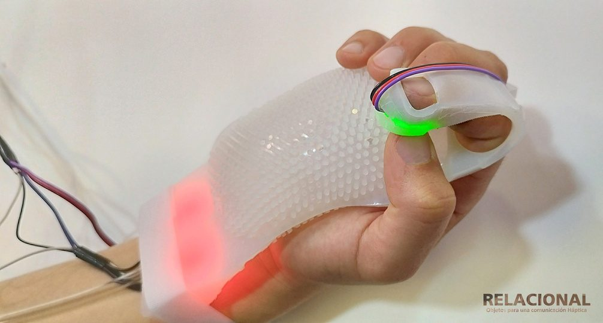
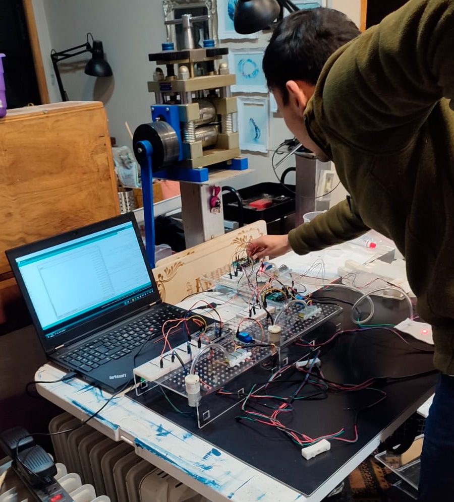

<title>Emilio Troncoso</title>
<meta name="claude:viewport-fit-sides" content="cover">
<meta name="description" content="Portafolio de Emilio Troncoso, diseñador en diseño computacional, fabricación digital e interfaces tangibles.">
<link rel="preconnect" href="https://fonts.googleapis.com">
<link rel="stylesheet" href="https://fonts.googleapis.com/css2?family=Bricolage+Grotesque:opsz,wght@12..96,300;12..96,500;12..96,700&family=Public+Sans:ital,wght@0,400;0,600;1,400&family=IBM+Plex+Mono:wght@300;400;500&display=swap">
<style>
/* Layout: una columna de lectura con fichas técnicas en mono a la izquierda y galerías a ancho completo; el punto rojo de relacional.lab es el único acento */
:root{
  --bg:#eceeed; --surface:#f7f8f7; --ink:#141716; --muted:#5b625f; --line:#c9cecc; --accent:#d9261c; --chip:#ffffff;
  --f-display:"Bricolage Grotesque", "Helvetica Neue", Arial, sans-serif;
  --f-body:"Public Sans", "Helvetica Neue", Arial, sans-serif;
  --f-mono:"IBM Plex Mono", ui-monospace, "SFMono-Regular", Menlo, monospace;
  --wrap:1180px;
}
@media (prefers-color-scheme: dark){:root:not([data-theme="light"]){
  --bg:#121514; --surface:#1a1e1d; --ink:#e9ecea; --muted:#9aa29f; --line:#2f3533; --accent:#ff4a3d; --chip:#1f2422; color-scheme:dark}}
:root[data-theme="dark"]{--bg:#121514; --surface:#1a1e1d; --ink:#e9ecea; --muted:#9aa29f; --line:#2f3533; --accent:#ff4a3d; --chip:#1f2422; color-scheme:dark}

*{box-sizing:border-box}
html{scroll-behavior:smooth}
@media (prefers-reduced-motion: reduce){html{scroll-behavior:auto}*{transition:none!important}}
body{background:var(--bg);color:var(--ink);font:400 16px/1.6 var(--f-body);-webkit-font-smoothing:antialiased}
.wrap{max-width:var(--wrap);margin:0 auto;padding-left:max(20px, env(safe-area-inset-left, 0px));padding-right:max(20px, env(safe-area-inset-right, 0px))}
a{color:inherit}
a:focus-visible,button:focus-visible{outline:2px solid var(--accent);outline-offset:3px}
.mono{font-family:var(--f-mono);font-size:.78rem;letter-spacing:.04em}
.dot{display:inline-block;width:.42em;height:.42em;border-radius:50%;background:var(--accent);vertical-align:.18em}

/* Cabecera */
header.top{position:sticky;top:env(safe-area-inset-top, 0px);z-index:10;background:color-mix(in srgb, var(--bg) 88%, transparent);backdrop-filter:blur(8px);border-bottom:1px solid var(--line)}
header.top .wrap{display:flex;align-items:center;justify-content:space-between;gap:16px;padding-block:14px;flex-wrap:wrap}
.brand{font-family:var(--f-display);font-weight:700;font-size:1.05rem;text-decoration:none}
.brand-sub{font-weight:300;color:var(--muted);margin-left:4px}
nav ul{display:flex;gap:6px;list-style:none;margin:0;padding:0;flex-wrap:wrap}
nav a{display:inline-block;text-decoration:none;color:var(--muted);font-family:var(--f-mono);font-weight:300;font-size:.78rem;text-transform:uppercase;letter-spacing:.08em;padding:7px 12px;border:1px solid var(--line);border-radius:2px;background:var(--chip);transition:background .2s,color .2s,border-color .2s}
nav a:hover{border-color:var(--ink);color:var(--ink)}
nav a.active{background:var(--ink);color:var(--bg);border-color:var(--ink)}
nav a.active::before{content:"";display:inline-block;width:6px;height:6px;border-radius:50%;background:var(--accent);margin-right:8px;vertical-align:2px}
@media (max-width:820px){nav ul{gap:6px}nav a{font-size:.74rem;padding:6px 9px}}

/* Portada */
.hero .wrap{display:grid;grid-template-columns:minmax(0,1.15fr) minmax(0,1fr);gap:48px;align-items:end;padding-block:64px 56px}
.hero h1{font-family:var(--f-display);font-weight:700;font-size:clamp(2.1rem,5vw,4.2rem);line-height:1;letter-spacing:-.03em;margin:0 0 24px;text-wrap:balance}
.hero .lede{font-size:1.15rem;max-width:34ch;margin:0 0 20px}
.hero .bio{color:var(--muted);max-width:60ch;margin:0}
.hero figure{margin:0}
.hero img{width:100%;aspect-ratio:4/3;object-fit:cover;display:block;border-radius:2px}
.hero figcaption{margin-top:8px;color:var(--muted)}
.facts{display:flex;flex-wrap:wrap;gap:8px 24px;margin-top:28px;padding-top:16px;border-top:1px solid var(--line)}
.facts span{color:var(--muted)}
.facts b{color:var(--ink);font-weight:500}

/* Secciones */
section.block{border-top:1px solid var(--line)}
section.block>.wrap{padding-block:56px}
.sec-head{display:flex;align-items:baseline;justify-content:space-between;gap:16px;flex-wrap:wrap;margin-bottom:40px}
.sec-head h2{font-family:var(--f-display);font-weight:700;font-size:clamp(1.8rem,4vw,2.6rem);letter-spacing:-.02em;margin:0}
.sec-head p{margin:0;color:var(--muted);max-width:52ch}

/* Proyecto */
.project{display:grid;grid-template-columns:minmax(0,260px) minmax(0,1fr);gap:40px;padding-block:40px;border-top:1px solid var(--line)}
.project:first-of-type{border-top:0;padding-top:0}
.spec{display:grid;gap:14px;align-content:start;position:sticky;top:calc(env(safe-area-inset-top, 0px) + 80px)}
.spec dl{margin:0;display:grid;gap:10px}
.spec dt{font-family:var(--f-mono);font-size:.7rem;text-transform:uppercase;letter-spacing:.1em;color:var(--muted)}
.spec dd{margin:2px 0 0;font-size:.92rem}
.year{font-family:var(--f-mono);font-size:.85rem;color:var(--accent)}
.tag{display:inline-block;margin-left:8px;padding:1px 7px;border:1px solid var(--line);border-radius:2px;color:var(--muted);font-size:.68rem;text-transform:uppercase;letter-spacing:.08em;vertical-align:1px}
.project h3{font-family:var(--f-display);font-weight:700;font-size:clamp(1.5rem,3vw,2rem);line-height:1.1;letter-spacing:-.015em;margin:0 0 14px;text-wrap:balance}
.project .desc{max-width:65ch;margin:0 0 24px}
.project .desc p{margin:0 0 10px}
.gallery{display:grid;grid-template-columns:repeat(6,minmax(0,1fr));gap:8px}
.gallery button{all:unset;cursor:zoom-in;display:block;overflow:hidden;background:var(--surface);border-radius:2px;grid-column:span 2;aspect-ratio:4/3}
.gallery button:first-child{grid-column:span 6;aspect-ratio:16/9}
.gallery button:focus-visible{outline:2px solid var(--accent);outline-offset:2px}
.gallery img{width:100%;height:100%;object-fit:cover;display:block;transition:transform .4s ease}
.gallery button:hover img{transform:scale(1.03)}
.gallery.contain button:first-child img{object-fit:contain}

/* Docencia */
.teach{display:grid;grid-template-columns:repeat(2,minmax(0,1fr));gap:24px}
.course{background:var(--surface);border:1px solid var(--line);padding:24px;border-radius:2px}
.course h3{font-family:var(--f-display);font-weight:700;font-size:1.35rem;margin:6px 0 10px}
.course p{margin:0;color:var(--muted)}
.teach-note{grid-column:1/-1;margin:0;color:var(--muted);max-width:70ch}
.list{list-style:none;margin:0;padding:0;display:grid;gap:0}
.list li{display:grid;grid-template-columns:110px minmax(0,1fr);gap:16px;padding-block:12px;border-top:1px solid var(--line)}
.list li .mono{color:var(--muted);padding-top:3px}
.list li.has-thumb{grid-template-columns:110px minmax(0,1fr) 120px;align-items:start}
.thumb{all:unset;cursor:zoom-in;display:block;width:120px;aspect-ratio:4/3;overflow:hidden;border-radius:2px;background:var(--surface)}
.thumb img{width:100%;height:100%;object-fit:cover;display:block;transition:transform .4s ease}
.thumb:hover img{transform:scale(1.05)}
.thumb:focus-visible{outline:2px solid var(--accent);outline-offset:2px}
.contact-grid{display:grid;grid-template-columns:minmax(0,1fr) 220px;gap:40px;align-items:end}
.contact-photo{margin:0}
.contact-photo .thumb{width:100%;aspect-ratio:4/5}
.contact-photo figcaption{margin-top:8px;color:var(--muted)}
@media (max-width:820px){.list li.has-thumb{grid-template-columns:minmax(0,1fr)}.list li.has-thumb .thumb{width:160px;margin-top:6px}.contact-grid{grid-template-columns:minmax(0,1fr);gap:28px}.contact-photo{max-width:200px}}

/* Contacto */
.contact .wrap{padding-block:64px 80px}
.contact h2{font-family:var(--f-display);font-weight:700;font-size:clamp(2rem,5vw,3.4rem);letter-spacing:-.025em;margin:0 0 28px;text-wrap:balance}
.contact-rows{display:grid;gap:12px}
.contact-row{display:flex;align-items:center;gap:12px;flex-wrap:wrap}
.contact-row .val{font-size:1.15rem;user-select:all;overflow-wrap:anywhere}
.copy{font:500 .72rem var(--f-mono);text-transform:uppercase;letter-spacing:.08em;background:transparent;color:var(--muted);border:1px solid var(--line);padding:5px 10px;border-radius:2px;cursor:pointer}
.copy:hover{color:var(--ink);border-color:var(--ink)}
footer{border-top:1px solid var(--line)}
footer .wrap{padding-block:20px;color:var(--muted);display:flex;justify-content:space-between;gap:12px;flex-wrap:wrap}

/* Visor */
dialog{border:0;padding:0;background:transparent;max-width:min(1200px,94vw);max-height:92vh}
dialog::backdrop{background:rgba(10,12,11,.88)}
dialog img{max-width:100%;max-height:84vh;display:block;margin:0 auto}
dialog .bar{display:flex;justify-content:space-between;align-items:center;gap:12px;padding-top:10px;color:#e9ecea}
dialog button{font:500 .75rem var(--f-mono);text-transform:uppercase;letter-spacing:.08em;background:transparent;color:#e9ecea;border:1px solid #5b625f;padding:6px 12px;cursor:pointer}

@media (max-width:820px){
  .hero .wrap{grid-template-columns:minmax(0,1fr);gap:28px;padding-block:40px}
  .project{grid-template-columns:minmax(0,1fr);gap:20px}
  .spec{position:static}
  .spec dl{grid-template-columns:repeat(2,minmax(0,1fr))}
  .teach{grid-template-columns:minmax(0,1fr)}
  .gallery{grid-template-columns:repeat(2,minmax(0,1fr))}
  .gallery button,.gallery button:first-child{grid-column:span 1}
  .gallery button:first-child{grid-column:span 2}
  .list li{grid-template-columns:minmax(0,1fr);gap:2px}
}
</style>

<header class="top">
  <div class="wrap">
    <a class="brand" href="#inicio">Emilio Troncoso <span class="brand-sub">Portafolio</span> <span class="dot" aria-hidden="true"></span></a>
    <nav aria-label="Secciones"><ul>
      <li><a href="#investigacion">Investigación</a></li>
      <li><a href="#colaboraciones">Colaboraciones</a></li>
      <li><a href="#proyectos">Proyectos</a></li>
      <li><a href="#docencia">Docencia</a></li>
      <li><a href="#contacto">Contacto</a></li>
    </ul></nav>
  </div>
</header>

<main id="inicio">
  <section class="hero">
    <div class="wrap">
      <div>
        <p class="mono" style="color:var(--muted);margin:0 0 18px">Diseñador · Magíster en Ciencias del Diseño</p>
        <h1>Diseño computacional, fabricación digital e interfaces tangibles.</h1>
        <p class="lede">Prototipos, interfaces experimentales y sistemas de fabricación para diseño, arquitectura y arte.</p>
        <p class="bio">Diseñador de la Universidad Mayor y Magíster en Ciencias del Diseño de la Universidad Adolfo Ibáñez. Docente adjunto de Fabricación Digital y Diseño Basado en Datos en la Escuela de Diseño UDP. Cofundó ModoCNC, donde dirigió durante diez años la fabricación CNC, láser e impresión 3D de proyectos para estudios, artistas e industria. Hoy dirige Sambla y Relacional.lab, donde investiga el cruce entre diseño, emociones y tecnología.</p>
        <div class="facts mono">
          <span><b>UDP</b> docente desde 2026</span>
          <span><b>ModoCNC</b> 2014–2024</span>
          <span><b>Premio</b> Mejor Tesis Proyectual UAI</span>
        </div>
      </div>
      <figure>
        
        <figcaption class="mono">Relacional · interfaz háptica, 2023</figcaption>
      </figure>
    </div>
  </section>

  <section class="block" id="investigacion">
    <div class="wrap">
      <div class="sec-head">
        <h2>Investigación proyectual</h2>
        <p>Objetos Relacionales: piezas físicas que transmiten gestos, tacto y presencia entre personas que están en lejania.</p>
      </div>
      <div data-group="investigacion"></div>
    </div>
  </section>

  <section class="block" id="colaboraciones">
    <div class="wrap">
      <div class="sec-head">
        <h2>Colaboraciones</h2>
        <p>Obras de otros autores en las que participé como parte del equipo. Cada ficha indica la autoría, el equipo y mi rol.</p>
      </div>
      <div data-group="colaboraciones"></div>
    </div>
  </section>

  <section class="block" id="proyectos">
    <div class="wrap">
      <div class="sec-head">
        <h2>Proyectos</h2>
        <p>Desarrollo digital, estrategias de fabricación y prototipado para artistas, arquitectos, empresas e industria.</p>
      </div>
      <div data-group="proyectos"></div>
    </div>
  </section>

  <section class="block" id="docencia">
    <div class="wrap">
      <div class="sec-head">
        <h2>Docencia</h2>
        <p>Escuela de Diseño, Universidad Diego Portales. Segundo año, para estudiantes de diseño industrial, textil y moda, gráfico e interacción digital.</p>
      </div>
      <div class="teach">
        <article class="course">
          <span class="mono year">2026</span>
          <h3>Fabricación Digital</h3>
          <p>Con foco en CAD/CAM mediante Rhinoceros: del modelo digital a la pieza física con corte láser, router CNC e impresión 3D, y en las estrategias de fabricación y prototipado.</p>
        </article>
        <article class="course">
          <span class="mono year">2026</span>
          <h3>Diseño Basado en Datos</h3>
          <p>Captura, procesamiento y traducción de datos estáticos y dinámicos a forma mediante Grasshopper y fabricación digital.</p>
        </article>
        <div style="grid-column:1/-1">
          <p class="mono" style="color:var(--muted);margin:16px 0 4px">Talleres y capacitaciones</p>
          <ul class="list">
            <li><span class="mono">2024</span><span>Impresión 3D de resina para prototipado y casting en joyería. Joyas Pruzzo.</span></li>
            <li><span class="mono">2019–2020</span><span>Introducción a la fabricación digital CAD/CAM con CNC y láser. ModoCNC.</span></li>
            <li><span class="mono">2019</span><span>Inducción a operadores de router CNC y láser. ModoCNC.</span></li>
            <li><span class="mono">2016–hoy</span><span>Software de diseño para fabricación digital e implementación de impresión 3D. Joyas Pruzzo.</span></li>
          </ul>
        </div>
        <div style="grid-column:1/-1">
          <p class="mono" style="color:var(--muted);margin:16px 0 4px">Charlas</p>
          <ul class="list">
            <li><span class="mono">2026</span><span>«Objetos Relacionales». Festival de Innovación y Tecnología, Universidad San Sebastián, Valdivia.</span></li>
            <li><span class="mono">2025</span><span>«Objetos Relacionales». Festival de Innovación y Emprendimiento Estudiantil, InjeniaHub, Universidad de Chile.</span></li>
            <li><span class="mono">2025</span><span>«Diseño Relacional». Centro de Interfaces Emergentes y Hélice, Universidad de Chile.</span></li>
          </ul>
        </div>
      </div>
    </div>
  </section>

  <section class="block contact" id="contacto">
    <div class="wrap">
      <div class="contact-grid">
      <div style="min-width:0">
      <h2>Conversemos sobre docencia, investigación o fabricación.</h2>
      <div class="contact-rows">
        <div class="contact-row"><span class="mono" style="color:var(--muted);width:70px">Correo</span><span class="val" id="mail">emilio.troncoso.tr@gmail.com</span><button class="copy" type="button" data-copy="mail">Copiar</button></div>
        <div class="contact-row"><span class="mono" style="color:var(--muted);width:70px">Teléfono</span><span class="val" id="tel">+56 9 8218 8909</span><button class="copy" type="button" data-copy="tel">Copiar</button></div>
        <div class="contact-row"><span class="mono" style="color:var(--muted);width:70px">Lugar</span><span class="val">Santiago, Chile</span></div>
      </div>
      </div>
      <figure class="contact-photo">
        <button class="thumb" type="button" data-zoom="img/taller-1.jpg" data-cap="Prototipado con Arduino en el taller" aria-label="Ampliar foto en el taller"></button>
        <figcaption class="mono">En el taller · prototipado con Arduino</figcaption>
      </figure>
      </div>
    </div>
  </section>
</main>

<footer><div class="wrap mono"><span>Emilio Troncoso Trujillo</span><span>modocnc · relacional.lab · sambla</span></div></footer>

<dialog id="viewer" aria-label="Imagen ampliada">
  
  <div class="bar"><span class="mono" id="viewer-cap"></span><span style="display:flex;gap:8px"><button type="button" id="prev">Anterior</button><button type="button" id="next">Siguiente</button><button type="button" id="close">Cerrar</button></span></div>
</dialog>

<script src="proyectos.js"></script>
<script>
const navLinks=[...document.querySelectorAll('nav a[href^="#"]')];
function setActive(id){ navLinks.forEach(a=>a.classList.toggle('active', a.getAttribute('href')==='#'+id)); }
if('IntersectionObserver' in window){
  const io=new IntersectionObserver(es=>{ es.forEach(e=>{ if(e.isIntersecting) setActive(e.target.id); }); },{rootMargin:'-35% 0px -60% 0px'});
  navLinks.forEach(a=>{ const s=document.querySelector(a.getAttribute('href')); if(s) io.observe(s); });
}
const all = [];
function el(tag, attrs={}, html=""){ const e=document.createElement(tag); for(const k in attrs) e.setAttribute(k, attrs[k]); if(html) e.innerHTML=html; return e; }
function esc(s){ return String(s).replace(/[&<>"]/g, c=>({"&":"&amp;","<":"&lt;",">":"&gt;",'"':"&quot;"}[c])); }

PROYECTOS.forEach(p=>{
  const host=document.querySelector(`[data-group="${p.grupo}"]`); if(!host) return;
  const art=el("article",{class:"project"});
  art.innerHTML=`<aside class="spec">
      <span class="year">${esc(p.anio)}${p.autoria?` <span class="tag">Colaboración</span>`:""}</span>
      <dl>
        <div><dt>Rol</dt><dd>${esc(p.rol)}</dd></div>
        ${p.autoria?`<div><dt>Autoría</dt><dd>${esc(p.autoria)}</dd></div>`:""}
        ${p.equipo?`<div><dt>Equipo</dt><dd>${esc(p.equipo)}</dd></div>`:""}
        <div><dt>Contexto</dt><dd>${esc(p.contexto)}</dd></div>
        <div><dt>Técnicas</dt><dd>${esc(p.tecnicas)}</dd></div>
      </dl>
    </aside>
    <div style="min-width:0">
      <h3>${esc(p.titulo)}</h3>
      <div class="desc">${p.desc.map(d=>`<p>${esc(d)}</p>`).join("")}</div>
      <div class="gallery"></div>
    </div>`;
  const g=art.querySelector(".gallery");
  p.imgs.forEach((name,i)=>{
    const idx=all.length; all.push({src:`img/${name}.jpg`, cap:p.titulo});
    const b=el("button",{type:"button","aria-label":`Ampliar imagen ${i+1} de ${p.titulo}`});
    b.innerHTML=``;
    b.addEventListener("click",()=>openViewer(idx));
    g.appendChild(b);
  });
  host.appendChild(art);
});

const dlg=document.getElementById("viewer"), vimg=document.getElementById("viewer-img"), vcap=document.getElementById("viewer-cap");
let cur=0;
function show(i){ cur=(i+all.length)%all.length; vimg.src=all[cur].src; vimg.alt=all[cur].cap; vcap.textContent=all[cur].cap; }
function openViewer(i){ show(i); try{ dlg.showModal(); }catch(e){ dlg.setAttribute("open",""); } }
document.getElementById("close").onclick=()=>dlg.close();
document.getElementById("prev").onclick=()=>show(cur-1);
document.getElementById("next").onclick=()=>show(cur+1);
dlg.addEventListener("click",e=>{ if(e.target===dlg) dlg.close(); });
document.addEventListener("keydown",e=>{ if(!dlg.open) return; if(e.key==="ArrowRight") show(cur+1); if(e.key==="ArrowLeft") show(cur-1); });

document.querySelectorAll("[data-zoom]").forEach(b=>{ const idx=all.length; all.push({src:b.dataset.zoom, cap:b.dataset.cap||""}); b.addEventListener("click",()=>openViewer(idx)); });

document.querySelectorAll("[data-copy]").forEach(b=>b.addEventListener("click",()=>{
  const t=document.getElementById(b.dataset.copy).textContent;
  const done=()=>{ b.textContent="Copiado"; setTimeout(()=>b.textContent="Copiar",1500); };
  try{ navigator.clipboard.writeText(t).then(done).catch(()=>selectText(b.dataset.copy)); }catch(e){ selectText(b.dataset.copy); }
}));
function selectText(id){ const r=document.createRange(); r.selectNodeContents(document.getElementById(id)); const s=getSelection(); s.removeAllRanges(); s.addRange(r); }
</script>
